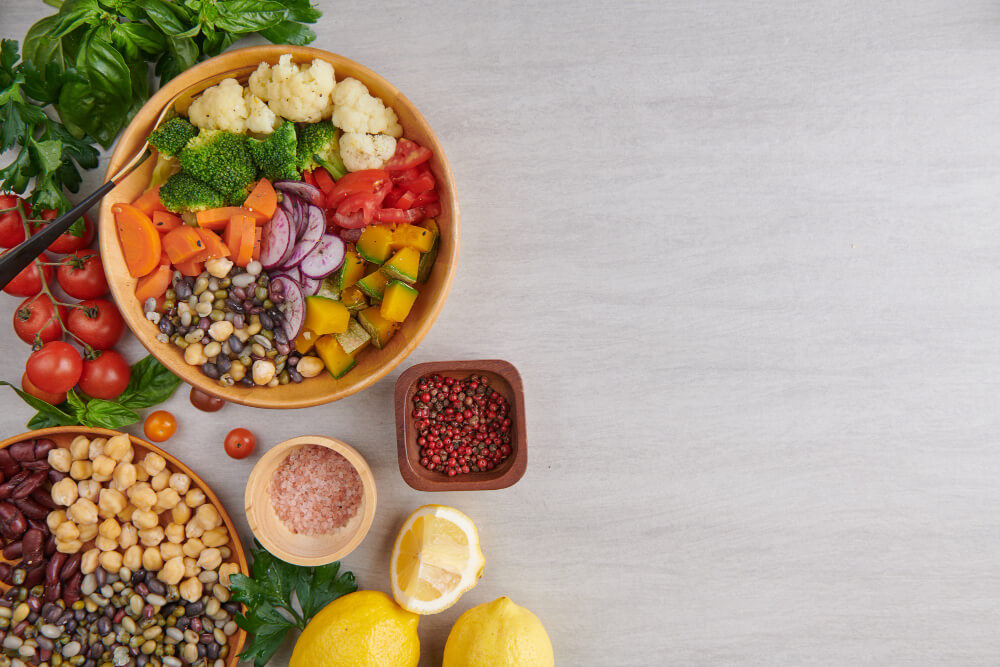

30
Nov
19 Makanan untuk Diabetes yang Direkomendasikan Ahli Gizi
Salah satu cara mencegah naiknya kadar gula darah bagi para penderita diabetes adalah dengan mengubah pola makan menjadi lebih sehat. Akan tetapi, mereka wajib untuk membatasi asupan makanan atau minuman tinggi gula, tinggi lemak, dan tinggi natrium. Tidak sulit untuk memilih makanan yang sesuai dan mudah didapat bagi penderita diabetes.
- From Mitra Keluarga
- 03 Comments